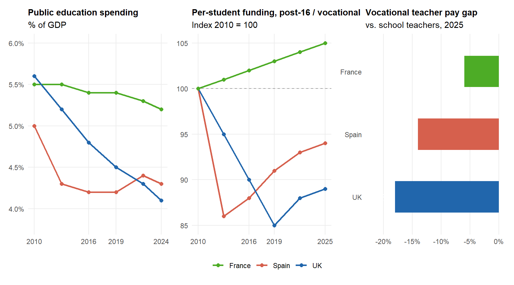

7 Education as Battleground: Universities, Schools, and the Politics of Curiosity
In September 2025, a federal district court in Boston issued a preliminary injunction against the cancellation of roughly $2.6 billion in research funding to Harvard University; the institution had sued the federal government three months earlier, alleging unconstitutional retaliation (Spitalniak, 2026). The same autumn, the regional government of Madrid imposed on its six public universities a budgetary directive that — on the universities’ own joint analysis — would prevent them from honouring the contractual obligations of their existing teaching staff; the directive was the latest expression of a multi-year pattern of fiscal pressure under successive Partido Popular administrations, increasingly aligned, in tone if not always in formal coalition, with the standard discursive register of the European far right.
Documentation of the Madrid episodes is, for the moment, scattered across regional and national press coverage in Spain rather than consolidated in academic literature; a serious historical reconstruction of the case is a project in its own right and is not attempted here. The argument requires only that the pattern of regional-government leverage over public-university budgets, governance composition and staffing — visible across several Spanish autonomous communities under right-aligned regional administrations — is acknowledged.
In Cardiff, the senior management of one of the United Kingdom’s larger Russell Group universities announced over four hundred academic redundancies, concentrated in modern languages, music, ancient history, and nursing; the cuts followed the partial unfreezing of undergraduate fees that, after a fourteen-year nominal cap, had been substantially eroded in real terms by inflation (University and College Union, 2025). In a vocational training institute (centro de formación profesional) in Cádiz (Spain), a student preparing for a high-demand health-sector qualification paid annual fees comparable in magnitude to those of certain private master’s programmes (CESUR, 2026) — an arithmetic that reflected, less the cost of the qualification, than the structural disinvestment of the autonomous community in the public component of post-secondary education.
These four scenes belong to one story. The institutional infrastructure of public reason — the universities, the schools, the libraries, the funded press, the professional bodies, the publicly accountable curricula through which deliberative liberal democracies have historically reproduced themselves — is under correlative attack from three directions at once: from above, by the open authoritarian assault documented in Chapter 2; from within, by the managerial-financial hollowing identified by Wendy Brown and others over the past two decades (Brown, 2015, 2019); and from below, by the steady defunding of pre-university public education and the de facto privatisation of vocational training, which together hollow out the social base from which any future intellectual life would have to be drawn.
The cultural-symbolic correlate of this triple compression has been examined in Chapter 4 and Chapter 5: the conversion of intellect into a luxury sign, the displacement of practice by performance, the emergence of what the book has called mausoleum culture. The image is not ornament but analytical claim. A mausoleum preserves the surface of what it commemorates with great care; it does so because the body inside is dead. The contemporary economy of intellectual signs circulates the artefacts of public reason — the bound book on the Bottega catwalk, the Substack manifesto on the dignity of slow reading, the influencer-philosopher’s three-camera podcast — at exactly the moment at which the institutions through which public reason was reproduced are being defunded, captured, or politically coerced into capitulation. The visibility of intellect rises as its institutional base contracts.
Political framing of international students in the UK knowledge economy
The article highlights a recurrent political bias: international students are framed primarily through the lens of migration control rather than as contributors to the UK’s knowledge economy and global competitiveness. Senior Conservative figures cited in the report argue that restricting the graduate route would undermine key national priorities —including research capacity, regional economic vitality, and the UK’s position as a science superpower— yet these evidence-based considerations are overshadowed by electoral incentives to reduce headline migration figures. The tension between economic evidence and political signalling is explicit throughout the piece.
Source: The Guardian (2024).
What the reconstruction of those institutions would require is, accordingly, the question the analysis takes up. No programme is proposed; the institutional choices belong to the public communities of the relevant jurisdictions, and the comparative record warns against the export of national templates. Three claims, then. First, the empirical record of 2025–2026 — across the United States, the United Kingdom, Spain, Italy, Greece, and elsewhere — shows that institutional resilience is organisationally produced: it has identifiable preconditions, unevenly distributed, which can be deliberately built or deliberately starved. Second, the institutions presently under assault were already hollowed by decades of donor capture, managerial drift, and the erosion of disciplinary self-governance; defending them as they are is not a sufficient programme. Third, the same logic that organises the assault on universities operates, often more invisibly, on the schools and on the vocational system on which the universities materially depend, and any reconstruction worth the name must reach down to that base. The five principles set out in the closing section attempt to specify, without foreclosure, what would have to be true for the reconstruction to be substantive rather than performative.
7.1 Resilience and capitulation: a 2025–2026 typology
The clearest single test of which institutional features matter for resilience comes from the United States in the eighteen months following January 2025. The federal record of the period combined three instruments — the conditional cancellation or freezing of research grants, the use of accreditation and visa policy as coercive levers, and the offer of restored funding in exchange for substantive changes in governance, hiring and curriculum — in a sequence that resembles the playbook documented in earlier comparative studies of competitive-authoritarian assaults on universities, from Türkiye after 2016 to Hungary after 2010 (Levitsky and Way, 2025; Schrecker, 2025). What is novel is the scale and the institutional sophistication of the response that the assault provoked.
A working typology of US institutional responses, as of mid-2026, distinguishes three positions. Resisters — Harvard, then MIT, Brown, USC, Penn, Virginia, Dartmouth — refused, by litigation or by collective declaration, the conditions attached to restored funding. The Compact for Academic Excellence, proposed by the federal administration in October 2025 as a uniform settlement template, was rejected by the consortium of leading institutions that had been invited to sign it; the rejection was both legal and rhetorical, framed in the explicit language of academic freedom and institutional autonomy. Settlers — Columbia in March 2025, Northwestern at $75 million in November, others on smaller terms — agreed to substantive concessions: changes in governance, in disciplinary processes, in admissions, in international-student procedures. Targets in continued litigation — Princeton, Cornell — pursued a multi-front legal contestation that, by the time of writing, had not yet resolved.
What distinguished the institutions in the first column from those in the second was not, as the public commentary often had it, the courage of leadership. The variables were determinate and largely structural. Endowment scale and the liquidity profile of those endowments mattered: institutions with deep, accessible reserves could afford the months of operational disruption that litigation imposed. Governance arrangements mattered: institutions with strong faculty senates, clearly defined trustee roles and longstanding professional norms of presidential accountability could mobilise internally with greater speed and coherence. Donor concentration mattered in the opposite direction: institutions whose annual operating budgets depended on a small number of large recurring gifts were, predictably, more vulnerable to coordinated donor pressure. Legal infrastructure mattered: institutions with seasoned in-house counsel and standing relationships with constitutional litigators of the first rank were able to file in federal court within weeks; institutions without that infrastructure were not. Faculty organisation mattered: institutions where the professoriate had a recognised collective voice — through unions, AAUP chapters, or strong senate traditions — could resist top-down concession in ways that institutions of merely professed shared governance could not. The provisional finding is one that the comparative literature has repeatedly produced — across the analyses of post-2010 Hungary, post-2016 Türkiye, and the longer twentieth-century record of universities under political pressure in the United States and elsewhere (Levitsky and Way, 2025; Reichman, 2019; Schrecker, 2025) — and that political and academic leadership tends, year after year, to forget: resilience to political coercion is not doctrinally declared, it is organisationally produced, and its preconditions can be built or starved across the long time-horizon over which institutions are made.
The argument generalises beyond the United States, though the European cases do not map onto it cleanly. The European university is, in number and in social function, primarily a public institution; the leverage of private donors and of student-as-consumer fee revenue is correspondingly smaller, and the dominant lever of pressure is fiscal and political rather than directly contractual.
The Spanish case is illustrative. The structural infrafinancing of the system relative to OECD averages is long-documented and has rarely been close to political resolution; the recurrent target of one per cent of GDP for higher education funding has been, in practice, an aspiration rather than a commitment. What has changed in recent years is the addition of a second pressure to the first: in those autonomous communities where the regional government has been formed by the centre-right or by centre-right administrations operating in close discursive alignment with the far right, a recognisable pattern of leverage has emerged. Public universities have faced repeated budgetary restrictions presented as fiscal prudence; appointments to oversight bodies have become more openly partisan; the contractual stability of teaching staff has been intermittently questioned; and the conditions of selection processes (oposiciones) have at times become themselves the object of public political argument (Donaire and Limón, 2026). The Madrid case has been the most visible nationally; the pattern is not, however, confined to it, and the documentation belongs to regional and national press coverage rather than to a yet-consolidated academic literature.
The Madrid public university system, 2024–2026
The principal documented elements of the Madrid case are as follows.
Research funding. The seventh Regional Plan for Research, Innovation and Technology (PRICIT 2026–2029), approved in March 2026, was funded at €752 million against the €998.2 million originally projected by the regional Directorate-General for Research — a €246 million reduction applied at the point of political agreement with the rectors of the six public universities.
Universidad Complutense de Madrid (UCM). In December 2024, the UCM was unable to meet payroll obligations and received a €34.5 million emergency loan from the regional government, conditional on the submission of a financial-containment plan. The resulting Plan Económico-Financiero 2025–2028, approved in February 2026, introduced €33 million in cuts: non-replacement of retiring staff, deferred internal promotions, a 5.7 per cent reduction in teaching hours over the previous year, and viability review of low-enrolment degrees. The Universidad Rey Juan Carlos has reported a parallel structural deficit of €76 million.
The 2031 settlement. The regional government and the rectors agreed a multi-year framework presented publicly as historic: €14.8 billion to 2031. On the public-sector component (€12.3 billion), the figure corresponds to 0.46 per cent of regional GDP for 2031, against a national average of 0.7 per cent and the long-standing one per cent demand of the university-platform movement.
Cumulative effect. The regional funding model has not been substantively updated for over fifteen years. Trade-union analyses note that nominal annual increases over the preceding decade have fallen, in cumulative terms, below the evolution of the consumer price index.
Sources:
- El País (2026)
- Infobae (2026)
- Cadena SER (2026)
- CCOO Madrid (2026)
The British case is structurally different and substantively converging. After the unfreezing of undergraduate fees that had remained nominally fixed for fourteen years, the inflation-adjusted real fee fell by a margin that, by the time of adjustment, no surface increase could plausibly recover. The result was a generalised funding emergency across the post-1992 universities and substantial parts of the Russell Group; in 2024–2025 alone, the redundancy notices and programme closures in modern languages, music, archaeology, ancient history, classics, and several professional schools accumulated to a scale unprecedented since the early 1980s (University and College Union, 2025). The political pressure on universities here has not taken the form of direct executive coercion but of a slower attrition: the displacement of public deliberation about the function of higher education by a managerial discourse of consumer choice, employability metrics and benchmarked excellence, in the lineage that William Díaz has reconstructed in detail (Diaz, 2021).
Italy and Greece exemplify, in different ways, what chronic underfunding produces over time. The Italian higher education system has for two decades operated below the funding levels of comparable European peers; the structural consequences — emigration of early-career researchers, unsustainable teaching loads, dependence on temporary contracts — are documented across successive ANVUR reports, most recently in the 2026 Rapporto sul sistema della formazione superiore e della ricerca (Agenzia Nazionale di Valutazione del Sistema Universitario e della Ricerca, 2026). Greece, after the post-2010 austerity programme, saw a system-wide compression of resources — a documented reduction of public-education spending in the order of one-third, accelerated academic emigration, and the operational near-collapse of several institutions — that, even as the macro-fiscal situation has stabilised, has left the public university operating with persistent deficits relative to its prior establishment (Giousmpasoglou et al., 2016). In neither case is the political register of assault as direct as in the United States; in both, the cumulative effect on the institutional capacity of the public university is comparable. Underfunding, sustained across a long enough horizon, achieves what direct coercion attempts more visibly.
China provides a contrast that is worth making briefly, less for the sake of completeness than for what it clarifies about the European and American cases. The Chinese system has, in the past decade, executed a remarkable expansion in research capacity in selected fields, supported by central state investment at a scale that the United States and the European Union have not matched (Karp and Zamiska, 2025). That expansion is conducted, however, within a political framework that places explicit limits on academic freedom in disciplines and topics deemed politically sensitive; party committees within universities have re-acquired functions that, in the post-1980 period of gaige kaifang, had been substantially attenuated. The point of the contrast is not that the European and American cases are converging on the Chinese pattern; they are not. The point is that the trade-off between state funding and political conditionality, often presented in the European debate as a problem peculiar to the corporate donor, exists at the public-funding level too, and the institutional question — by what mechanisms is the state-funded university to be insulated from state political pressure? — is not a peripheral concern of comparative governance but central to the very meaning of public funding for higher education. The European tradition has good answers to this question; it has, in recent years, made less serious use of them than the answers deserve.
The dynamic is not confined to the university.
When China invested —through subsidies, state-affiliated capital, and publicly trained engineering talent— in AI startups such as Manus, it subsequently asserted jurisdiction over the resulting intellectual property even after the founding team redomiciled abroad. Beijing’s unwinding of Meta’s ~$2bn acquisition of Manus (April 2026) and its instruction to leading firms including Moonshot AI and ByteDance to seek government approval before accepting foreign capital illustrates the point: public funding carries political conditionality as a latent term, invoked when the state’s strategic interests are at stake. The same logic underlies China’s Military-Civil Fusion policy (2017—), which legally obliges private firms to cooperate with state intelligence regardless of corporate structure.
Sources:
- Reuters — China Unwinds Meta’s Acquisition of Manus (27 April 2026)
- Asia Times — China’s Manus AI Case Sets Red Lines to Bar “Singapore Washing” (May 2026)
- CKGSB Knowledge — DeepSeek and China’s State-Power AI Push (May 2025)
The synthesis that emerges across these cases is structural. Resilience, where it exists, has the same components in different combinations: financial buffer; organisational autonomy; faculty self-government with effective voice; legal infrastructure; clear institutional commitment to publicly defensible functions. Capitulation, where it occurs, is the inverse of these features. The variables are not normative; they are organisational. Whether they can be deliberately reconstructed, where they have eroded, is the question that the remainder of the analysis takes up.
7.2 What academic freedom is for
The defence of the contemporary university cannot be conducted on the assumption that what is being defended is self-evidently worth defending. The institutional descriptions of academic freedom that the AAUP issued in 1915 and 1940 (American Association of University Professors, 1915, 1940), elaborated more recently by Robert Post, Joan Scott, Henry Reichman and Ellen Schrecker (Reichman, 2019; Schrecker, 2025; Scott, 2019), identify three distinct functions for which academic freedom is the institutional precondition.
The first is the protection of inquiry against political manipulation. This is the classical Humboldtian rationale, restated for the present period. The argument is not that academics have a special licence to say whatever they wish; it is that the social practice of finding out what is the case, in fields where the answer cannot be fixed in advance by political authority without distorting the answer, requires institutional spaces in which inquiry can be conducted under conditions of methodological constraint and not under conditions of political conformity. Climate science, virology, history, demographics, the study of inequality and of discrimination — across each of these the contemporary record contains documented instances in which political authorities have attempted to determine in advance what conclusions may be reached. The function of academic freedom is to make those determinations professionally illegitimate and institutionally costly to enforce.
The second function is the maintenance of disciplinary self-governance. Expertise as such is not a property of individual researchers; it is a practice reproduced through the long processes of peer review, peer adjudication, peer training and peer correction within disciplines. To say that a chemist is a chemist is to say that the chemist has been socialised into and is recognised by the disciplinary community of chemistry; the same is true, with variations, of historians, lawyers, surgeons, and engineers. When external authorities — political, managerial, market — substitute their own judgements for those of the disciplinary community, expertise is not preserved while its content is adjusted; expertise itself ceases to be reproducible. This is the deeper damage in the displacement of peer review by metric-driven managerial assessment, in the substitution of “research excellence frameworks” and citation indices for the slower work of disciplinary judgement (Diaz, 2021). The institution’s mediating function is hollowed without anything having to be openly removed.
The third function is the provision of an independent voice in democratic deliberation. The premise of deliberative liberal democracy, as articulated in the lineage from Habermas through to its contemporary critics (Fraser, 2022; Habermas, 2023; Mouffe, 2018), is that public reason has institutional anchors outside the partisan and the commercial. The university — alongside the funded press, the public archive, the independent professional body — is one of those anchors. To say this is not to claim that academics are uniquely virtuous, or that their conclusions deserve special deference. It is to say that the practice of contestable, peer-corrected, slow inquiry has a public function that no other institution discharges in the same way, and that defending that function is the condition under which democratic publics can have access to information that is not produced primarily for partisan or commercial ends.
The defence is complicated, however, by an observation that Brett Holt has recently made with some force. Both anti-intellectualism and intellectualism, Holt argues, can operate as barriers to academic freedom: the first by suppressing inquiry in the name of folk authority or political loyalty, the second by closing inquiry in the name of credentialled certitude, disciplinary territorialism, or moral purity (Holt, 2025). The complication matters here for two reasons. It blocks the temptation, recurrent in defences of the contemporary university, to treat academic freedom as the natural property of those who are correct; the institutional protection is for the practice of inquiry, including inquiry that arrives at conclusions one finds wrong, and a culture that confuses academic freedom with curatorial agreement among those already inside the room is a culture in which the protection has begun to corrode from within. And it provides the bridge to the next section, which is the harder thing to say about the institutions presently under attack: that they were already, in important respects, not in the condition that the defence implicitly attributes to them.
7.3 The long internal hollowing
The contemporary assault on universities is not the only thing wrong with universities. Wendy Brown’s analyses of neoliberal subjectivity and of the corrosion of democratic institutions describe a slower process whose effects on the academic institution were already, by the early 2020s, substantial (Brown, 2015, 2019). Three vectors of that process require attention here: the casualisation of the academic labour force, the financialisation of institutional governance, and — the two lines this chapter develops in more detail — the leverage exerted by external donors over institutional research agendas and the leverage exerted by partisan political authorities over institutional governance.
The casualisation of teaching labour is the most extensively documented of these processes. Across the United States, the United Kingdom, Spain and elsewhere, the proportion of teaching delivered by faculty on contingent, non-tenure-track or hourly-paid contracts has risen consistently since the late 1990s; in the United States the figure now exceeds two-thirds in many institutions, and in Spanish public universities the figura del profesor asociado has expanded well beyond its statutory definition as a part-time accommodation for working professionals. The pedagogical and intellectual consequences of this shift have been examined by, among others, the AAUP’s longitudinal reporting and by Reichman (Reichman, 2019): contingent faculty teach more, are paid less, lack the protections that academic freedom in practice requires, and are structurally precluded from the slow research that disciplinary innovation depends on. The financialisation of governance — endowment-management strategies optimised for nominal returns, capital-project portfolios financed by long-dated debt, operating budgets dependent on continuous enrolment growth — has reinforced the same direction: a managerial logic in which the university is governed as a financial entity whose academic activities are one input among others.
The third and fourth vectors — donor leverage and partisan political pressure — deserve fuller treatment, because they are the specific mechanisms through which the long internal hollowing connects to the present external assault.
7.3.1 Donors, sponsored chairs, and the slow shaping of agendas
The American discussion of donor influence over universities has, for two decades, focused largely on the network of foundations associated with Charles Koch and on a smaller set of similarly oriented donors. Reichman’s detailed reconstruction of those cases (2019, ch. 5) makes clear that the pattern has rarely been one of explicit bribery; it has been one of agenda shaping. Funded chairs, named centres, fellowship programmes, library acquisitions and conference series accumulate over time into a research environment whose questions, methods and intellectual reference points have been shifted, sometimes only marginally and sometimes substantially, towards the priorities of the funders. The institutional defence in such cases — that no specific finding has been altered in response to donor pressure — misses the point. The integrity of inquiry is not preserved by the absence of overt interference; it is corroded by the cumulative effect of a research environment in which certain questions have been systematically resourced and other questions have not.
The European version of this pattern is less documented in the academic literature than in investigative journalism and institutional life. In Spain, the principal vector has been the sponsored chair (cátedra patrocinada) financed by a firm with a direct interest in the chair’s research output. Energy companies—electricity providers, hydrocarbon operators, and infrastructure concessionaires—have been especially active. The resulting reports and observatory outputs tend to inform public debate on questions in which the funder carries substantial financial exposure.
The conflict-of-interest concerns that this generates are not hypothetical. Where the firm in question has a parallel public commitment to environmental sustainability that exceeds, at the level of communications, what its operations actually deliver — the pattern conventionally referred to as greenwashing — the chair functions, intentionally or not, as part of the architecture of that communication. Where the firm has a strategic interest in the regulatory framing of, say, automation in the labour market, the observatory it funds will tend to produce work that is, at the very least, compatible with that interest. The point is not that the resulting work is necessarily wrong; the point is that the conditions under which it has been produced make its independence from the funder’s interest harder to establish than its institutional badging would suggest.
Academicwashing: Sponsored Chairs, Energy Companies, and Agenda Compatibility
An analogous dynamic is visible at international scale in Gulf sovereign-fund investment in Western AI and energy research chairs, where empirical work has found that funded institutions tend to produce output broadly compatible with the donor’s strategic and reputational priorities.
Sources:
- La Marea — #Academicwashing: Las energéticas lavan su imagen en la universidad (October 2021) : Investigative report documenting the pattern of energy-company-sponsored chairs across Spanish universities and analysing, in Bourdieusian terms, the conversion of corporate economic capital into institutional symbolic capital. Coins the term academicwashing to describe the overlap between sponsored research and corporate sustainability communication.
- Ziolo et al. — Literature Review of Greenwashing Research: State of the Art, Corporate Social Responsibility and Environmental Management (2024) : Systematic bibliometric review of 112 publications (2007–2023), covering the mechanisms by which firms sustain a sustainability image while limiting operational change, including the role of third-party authorisations and voluntary public programmes.
- Middle East Forum — Saudi Arabia and the UAE Fund Academia With Strings Attached (2019) : Documents Gulf state funding of chairs, centres, and fellowships in Western universities, including Saudi Aramco’s $25 million grant to MIT for renewable energy and AI research. Reports the Bergan Draege and Lestra study finding that Gulf-funded British institutions were measurably less likely to raise issues of democracy and human rights, illustrating the mechanism of silent agenda compatibility between donor interest and research output.
The implication is institutional rather than personal. Sponsored chairs and observatories, in fields where the funder has a substantive strategic interest, require disclosure protocols, methodological independence guarantees, and editorial firewalls of a kind that the existing Spanish framework does not consistently impose. Where these protections are absent, the public good of independent academic research is not preserved by goodwill on either side; it is corroded by the structural alignment of the research with the funder’s incentives.
7.3.2 Partisan political pressure: federal, regional, autonomic
The assault on US universities documented in Section 7.1 is the most visible contemporary instance of partisan political pressure, but it is not the only model. Where the American instrument has been federal — the conditional withholding of research funding through executive action, the use of the Department of Justice and the Department of Education as instruments of substantive policy — the European instrument is more often regional. In Spain, the autonomous communities hold extensive constitutional competence over the financing of public universities and over significant components of pre-university education, and the leverage that this confers on regional governments aligned with the centre-right or the far right has been used in a recognisable pattern.
The pattern combines four instruments. Budgetary restriction: the use of fiscal pressure to limit operational capacity and, indirectly, the autonomy of decisions about hiring, retention and programme provision. Appointment leverage: the placement of allies on oversight bodies, social councils (consejos sociales) and on the boards of associated research institutes. Programmatic pressure: the public questioning of disciplinary content — most often in the social sciences and the humanities, less often in the natural sciences — that has been politically coded as disagreeable. Symbolic delegitimation: the routine use of public communication channels to characterise the public university as an ideologically captured institution requiring corrective oversight, in a register continuous with the standard discursive grammar of the contemporary European far right.
The Madrid case, as already noted, has been the most visible at the national level; analogous dynamics are documentable in other autonomous communities, with variations of intensity and of registers. The underlying structure is the same in each: the use of the legitimate constitutional levers available to a regional government to exert pressure on institutions whose political autonomy that government experiences as a problem. The question whether the use is legitimate is not, on the evidence available, a question that can be answered in the abstract; it is a question about how budgetary, appointment, programmatic and communicative levers are exercised in specific cases. Adjudication of specific cases is beyond the scope of the argument here. What can be recorded is the pattern itself, and that the pattern is not evenly distributed across the political spectrum: where it reaches a sufficient density, it begins to reproduce, in slower and more deniable form, the same set of effects that the more direct American assault has produced more rapidly.
The Hungarian precedent is worth registering as the limit case. Central European University, founded in Budapest in 1991 and developed across three decades into one of the most internationally recognised institutions of post-communist Europe, was effectively forced out of Hungary by 2018 through a combination of legislative change and administrative obstruction. The episode was covered at the time as exceptional; the years since have made clear that it was, rather, a high-resolution preview of an instrument that has since been deployed, in different combinations, in several political settings. The European discussion of academic freedom that developed around the CEU case has not yet been translated into the institutional protections that would prevent its repetition.
Donor Capture and State Coercion: Two Vectors of the Same Problem
The threat to research independence does not run in one direction only. In the United States, private donor networks have shaped research agendas through funding conditionality without requiring explicit interference; while since 2025 the federal executive has deployed financial coercion directly, freezing or cancelling billions in congressionally approved research funding to extract institutional compliance. The European case presents a softer version of the same dual structure: corporate-sponsored chairs that tend toward agenda compatibility with their funders, and Gulf sovereign-fund investment in Western universities that empirical work has shown to correlate with reduced coverage of topics unwelcome to the donor state.
United States: See Reichman (2019, ch. 5), Spitalniak (2026), and Levitsky et al. (2025).
United Kingdom / Europe: See Collin (2021), Middle East Forum (2019), and UCU (2025).
The donor and the partisan vectors interact. Where the partisan political authority is committed to the structural disinvestment of the public university, donor-funded chairs and observatories acquire additional weight in the resulting institutional landscape; their work occupies space that publicly funded research, under conditions of general fiscal compression, has progressively vacated. Where the partisan authority is committed to a particular substantive direction in research — energy transition narratives, labour-market digitalisation, the regulatory framing of artificial intelligence — donor and political incentives can align in ways that further compress the space for independent inquiry. The internal hollowing of the institution and the external pressure on it are not, in this respect, separate problems; they are two phases of the same process.
7.4 The school: the second front
The argument so far has been about the university. The university is, however, not the prior institution of public reason; the school is. The reproduction of the social capacity for sustained, rule-bound, error-correcting inquiry begins in primary and secondary education, and any reconstruction of public reason that does not reach down to that base is not a reconstruction but a curatorial defence of what is already, increasingly, residual. The school is the second decisive front, and in some respects — for the long horizon and for the social distribution of intellectual capacity — the more important of the two.
7.4.1 Pre-university underfunding and the FP problem
The structural infrafinancing of public pre-university education in much of southern Europe is an old and well-documented condition. In Spain, the persistent gap between average teacher–pupil ratios in the public system and those of comparable European peers, the chronic difficulties of timely substitution of staff during periods of leave, the precariousness and overcrowding of facilities, and the cumulative effect of two decades of austerity-period budget restraint have together produced a system whose operational efficacy is markedly below what its formal architecture would suggest. The phenomenon is not Spanish-specific; analogous patterns are documentable in Italy, Greece, Portugal, and parts of Eastern Europe. What makes the Spanish case particularly diagnostic is the addition, on top of the underfunding, of a structural problem in vocational training (formación profesional, FP) that has had national political weight in recent years and that exemplifies the broader logic of disinvestment with unusual clarity.
The FP Access Gap: Public Underfunding and Privatisation by Default
The structural underfunding of pre-university vocational education in Spain has produced a measurable access crisis. In 2025–2026, over 62,000 students in the Madrid region alone were denied a public FP place — a 25% increase on the previous year. Nationally, one in five FP students now attends a private institution; in Madrid and the Basque Country the figure reaches 40%. The pattern is not random: private provision concentrates in the most employable specialisms, while public supply stagnates. The result is access stratified by income at the pre-university stage, compounding inequalities that higher education is then expected to correct.
Sources:
- elDiario.es — El precio de que no haya plazas públicas de FP en Madrid (nov. 2025)
- El Español — El 40% de los alumnos de FP en Madrid y País Vasco ya eligen la privada (ene. 2026)
- elDiario.es — Una falla en el sistema escolar andaluz: la falta de vacantes en FP (nov. 2023)
- El País / andaluciainforma.eldiario.es — La Junta dispara la FP privada: 9.450 plazas privadas frente a 2.588 públicas (oct. 2025)
- CCOO Andalucía — La FP en venta: cómo la privatización avanza en Andalucía (informe, mar. 2026)
- USTEA — Denuncia la macro-privatización de la FP en Andalucía (oct. 2025)
The FP problem has several layers. The first is fiscal. In a number of autonomous communities, the public fees attached to higher-cycle (grado superior) FP programmes in high labour-market-demand sectors — health, certain technical fields, advanced industrial trades — have approached or exceeded the fees charged for first-degree or master’s programmes at certain private institutions. The arithmetic is striking on its own terms; it is more striking against the background of the FP system’s putative function. Vocational training is, on every reasonable account, the institutional infrastructure through which a national economy reproduces the technical labour force on which its medium-term productivity depends; in regions where the economic stabilisation of rural and peri-urban populations is itself a strategic concern, the same vocational training is, additionally, a major instrument of demographic policy. To make access to high-demand FP qualifications expensive — to make it, in some cases, comparable in cost to private postgraduate study — is to misalign the price signal in a way that the market alone would not produce. It is a political choice about the public component of vocational training, made through fee policy rather than through the more visible instrument of programme design.
The second layer is sectoral. The expansion of dual-track FP, the integration of FP programmes with employer apprenticeships, and the recurrent revision of curricular content in response to changing employer requirements have produced, on paper, a more responsive system than the one that existed a decade ago. The implementation has been uneven. The autonomous communities that have invested most consistently in FP infrastructure have produced documented improvements in placement rates and employer satisfaction; the communities that have not have produced a system in which the formal apparatus of dual-track training exists primarily on the level of policy documents rather than of operational practice. The result, again unevenly distributed, is that the FP system is more responsive to employer requirements at the level of formal content and less responsive at the level of operational delivery, a configuration that produces predictable problems for both students and employers.
The Andalusian case illustrates both layers; it does not exhaust the pattern, and the granular reconstruction that the case in its specificity would require is beyond the present scope. The analytic point, however, is generalisable. The combination of underfunded pre-university public education and fiscally compressed FP — read against the background of the broader disinvestment of public-sector intellectual infrastructure — has the predictable effect of narrowing the social base from which the subsequent stages of the system, including the universities, draw their students and their staff (Lillo Cea and Bertilsson, 2025; Xiang and Chiu, 2024). Pre-university defunding, sustained across decades, is the lower stratum of the same process whose upper stratum is the political assault on universities (Zarifa et al., 2026). It is invisible because it operates slowly and unevenly; it is consequential precisely for that reason.
There is a further irony worth naming. The political formations most consistently hostile to expert authority — those whose rhetoric identifies climate scientists as ideological partisans, public health officials as instruments of social control, and academic institutions as engines of elite reproduction — have historically drawn their electoral base from precisely the social strata whose economic standing depended on the mid-level technical qualifications that FP (formación profesional: Spain’s vocational education and training pathway) systems exist to provide. Anti-intellectualism, as the empirical literature makes clear, is not a targeted scepticism directed at particular domains of expertise; it is a generalised disposition against the epistemic authority of trained knowledge as such (Merkley, 2020). That disposition is no less corrosive when applied to the skilled competences of the electrician, the industrial technician, or the healthcare assistant than when applied to the climate scientist. The defunding of the system that produces those competences is, on this reading, not a betrayal of the movement’s working-class constituency that contradicts its anti-intellectual posture: it is a consequence of it. Performative solidarity with the industrial worker coexists, structurally, with indifference to the institutional conditions under which the next generation of industrial workers is formed (Norris and Inglehart, 2019; Oesch and Rennwald, 2018).
7.4.2 Curriculum, public attention, and the displacement of the educational debate
The politicisation of curriculum has returned, in much of the anglophone world and parts of continental Europe, to a level of visibility that it had not had since the 1980s. In the United States, state-level legislation restricting how race, sexuality and gender may be taught has become a routine instrument of partisan politics Norris and Inglehart (2019); in the United Kingdom, debates over the place of religious education and over the framing of contested historical episodes have acquired a public temperature out of proportion to their educational stakes (Adams, 2021); in Spain, attempts to introduce parental veto over curricular content (the pin parental episodes) have served as test cases for the broader far-right contestation of public education as such (Caraballo, 2025).
What is striking about these episodes is not principally their content. It is the displacement effect they exert on the public debate about education. The available political and journalistic attention, in any given period, is not unlimited; it is, on the contrary, scarce and increasingly extracted by the platform-economic processes documented in Chapter 3. The curricular controversies and the broader symbolic politics of national identity, immigration, and the construction of internal enemies absorb very large fractions of that attention.
Structural Underfunding and the Displacement of the Education Debate
While public debate concentrates on curriculum controversies promoted by conservative advocacy groups, the measurable indicators of structural deterioration accumulate largely unattended. In England, college funding per student in 2025 remains 11% below 2010 levels, and school sixth-form funding 23% lower; average college teacher pay runs 18% below that of school teachers, driving annual exit rates of 16%. In Spain, per-student investment in primary and secondary education remains below the EU average and household spending on supplementary educational services has risen continuously — an indirect indicator of declining public provision.
Sources:
- IFS — Annual Report on Education Spending in England: 2025–26 (Feb. 2026)
- Sutton Trust — School Funding and Pupil Premium 2025 (Dec. 2025)
- SEIE — Sistema Estatal de Indicadores de la Educación 2025, Ministerio de Educación
- EACEA — Education and Training Monitor 2025, European Commission
- EACEA — Education and Training Monitor 2025, Spain
The structural conditions of the educational system — class sizes, teacher pay, building maintenance, library staffing, specialist provision, the slow attrition of public-school capacity — receive correspondingly less. The displacement is not accidental in any conspiratorial sense, but it is also not random. The political economy of public attention systematically favours the high-affect, identity-coded controversy over the low-affect, infrastructural fact, and the political actors most invested in the disinvestment of public education are also, by independent measurement, those most active in the production of the high-affect controversy. The result is that the substantive crisis of educational infrastructure is consistently under-discussed relative to its actual stakes.
The connection to the cultural argument of Chapter 4 and Chapter 5 is direct. Public reason, as a social practice, requires sustained collective attention to the conditions of its own reproduction. When that attention is captured by manufactured controversy, the conditions of reproduction degrade silently, and the cultural visibility of signs of intellect — the literary tote bag, the curated bookshelf, the influencer-philosopher’s reading list — rises in inverse proportion to the institutional health of the practice they signify (Adams, 2021; Norris and Inglehart, 2019). The mausoleum dynamic and the displacement of the educational debate are not separate phenomena; they are the cultural-symbolic and the political-economic faces of a single transformation.
7.4.3 Two forms of anti-intellectualism
A note on the diagnostic vocabulary is owed at this point. In the public discussion of contemporary anti-intellectualism — the discussion in which this work intervenes — there is a recurrent tendency to read the phenomenon along a single axis: as Luddism, technophobia, retreat into pre-modern certainties, mythic return. The reading captures a visible component of the contemporary configuration but mistakes its register for its mechanism. Climate-change denial, vaccine refusal, the rejection of evolutionary biology in favour of creationist alternatives, the broader rejection of scientific consensus where the consensus conflicts with prior political identification — these are recognisably anti-intellectualist in their surface register, though their deeper structure is less spontaneous than organised: the manufactured doubt directed at climate science, in particular, has been empirically traced to coordinated campaigns funded by fossil-fuel interests for whom the scientific consensus carried direct regulatory implications (McCright and Dunlap, 2010; Oreskes and Conway, 2010). The anti-intellectual posture is, in these cases, an instrument rather than a conviction — which does not reduce its political effectiveness, but does change what kind of phenomenon it is. I shall call this the mobilised form of contemporary anti-intellectualism: organised in the public discussion, Luddite in register, instrumental in structure.
But the anti-intellectualism that operates inside the managerial discussion of education, and that is at present the dominant form in the discourse through which public education is being defunded, is not of this kind. It is, on the contrary, ostentatiously technophilic in register, and managerial in mechanism. It claims that contemporary information technology — and increasingly artificial intelligence in particular — has made obsolete the slow, expensive, institutionally mediated practices of public reason; that the textbook, the small class, the experienced teacher, the library, the seminar, the disciplinary curriculum can be replaced or substantially streamlined by adaptive learning platforms, by AI tutoring systems, by automated assessment, by curated content delivery. The argument is not always made in those words. It is made through funding decisions, through pilot programmes, through procurement frameworks, through the rhetorical positioning of educational reform as digital modernisation. It assumes, without arguing, that the cognitive work that public education at its best produces is a function whose inputs and outputs can be measured and whose production can be optimised; that what looks like institutional commitment to the slow time of intellectual development is in fact an inefficiency to be removed. I shall call this the managerial form.
The two forms — mobilised and managerial — are not equally distributed across the political spectrum, but neither is either confined to one pole. The mobilised form has acquired periodic peaks of political visibility around specific issues over the last two decades, and is the form most often discussed in the academic literature on anti-intellectualism; its industrial-organisational genealogy runs through tobacco-cancer denial, the long campaign against evolutionary biology in U.S. public schooling, and the more recent climate and vaccine controversies (Oreskes and Conway, 2010). The managerial form is, in 2025–2026, the form gathering momentum: it is the form within which the disinvestment of public education is currently being argued for, and the form whose argumentative resources are being reinforced by the genuine capacities of recent generative-AI systems. Distinguishing the two matters because the institutional response to them is different. The mobilised form requires public defence of the methodological cultures from which its objects of rejection emerge, and a clearer naming of the industrial interests that fund its visibility. The managerial form requires something harder: the public articulation of why slow, expensive, institutionally mediated cognitive work cannot be replaced by faster cheaper substitutes without loss of function — a defence the universities have, in recent years, made less competently than the moment requires (Hari, 2022; Kosmyna et al., 2025).
The structural function of recognising both forms is that the symbolic culture documented in Chapter 4 and Chapter 5 — the marketised circulation of signs of intellect — sits, materially, on top of both. The luxury sign of intellectual seriousness is socially intelligible only against the background of the practice’s increasing rarity, and that practice’s rarity has two converging causes: the mobilised political assault on its public legitimacy, and the managerial assault on its institutional infrastructure. The cultural argument of the earlier chapters and the institutional argument of the present one are not two analyses of two phenomena. They are two views of one.
7.5 Towards reconstruction: five principles
The institutional reconstruction that the foregoing analysis indicates would require commitments at five levels. The principles are stated as commitments rather than as policies because the institutional arrangements through which each is realised vary substantially across jurisdictions; the work of policy specification belongs to the public communities involved, not to a comparative analysis of the kind attempted here.
Principle 1: Public funding sufficient to insulate inquiry from private capture.
The contemporary university cannot be financed exclusively by tuition revenue, donor contributions, and research overheads, because each of these revenue streams has predictable structural effects on what the university researches and teaches. Tuition financing reorients the institution towards student-as-consumer logics; donor financing reorients it towards the priorities of those able to make substantial gifts; overhead-driven research reorients it towards funder priorities. None of these streams should be eliminated; all should be limited in their share by a base of public funding sufficient to make the institution’s research and teaching agenda determinable, in the last instance, by professional and disciplinary judgement rather than by the structure of its non-public revenue. The level at which this is satisfied varies by jurisdiction; what does not vary is the principle, which is that the share of public funding must be high enough to make the institution’s basic operations independent of any single private revenue source.
The corollary, which the analysis of partisan political pressure complicates, is that public funding requires institutional protections against the political authority that provides it. The forms of protection — multi-year funding settlements, independent funding councils with arms-length governance, statutory protection of specified institutional autonomies — are well known in the comparative literature and are unevenly implemented. Where they are absent, the public component of funding becomes a lever rather than an insulation, and the institution is rendered dependent in a different way.
Principle 2: Faculty governance with real authority.
The empirical record of resistance and capitulation reviewed in Section 7.1 is unambiguous on this point: institutions with strong faculty governance — recognised collective voice, defined competence over academic decisions, effective senates, working union or professional-association infrastructure — were, in the 2025–2026 period, materially better able to resist political pressure than institutions in which shared governance was a rhetorical commitment rather than an institutional reality. The principle is not that faculty governance is, in general, the best mode of institutional decision-making; it is that for those questions on which the institution’s specific function — the conduct of slow, contestable, peer-correctable inquiry — depends, the relevant judgement belongs to those whose professional formation makes them competent to exercise it. Where faculty governance is weak, the institution is structurally vulnerable to coercion from any direction in which pressure arrives.
Principle 3: Distributed access to the full educational infrastructure.
A democratic system of public reason requires that access to advanced learning is not contingent on prior class privilege; the principle is older than this analysis and has always been, in practice, only partially honoured. What this chapter adds to the principle is the requirement that distributed access be understood as covering the full educational infrastructure, from primary schooling through secondary education through vocational training and on into higher education. The university cannot operate well on a base of pre-university and vocational systems that are themselves underfunded, fee-encumbered, or reduced to operating below their formal capacity. The principle, in this expanded form, requires sustained public investment at every level of the system, with particular attention to the levels — vocational training, lower secondary in deprived areas, specialist provision — at which the social distribution of educational opportunity is currently most unequal. The resourcing of the universities is not an alternative to the resourcing of the schools and the FP system; it is, on the long horizon, dependent on it.
Principle 4: Slow time, defended as institutional commitment rather than personal aesthetic.
The metric-driven managerial governance of the past two decades has compressed the temporal infrastructure on which intellectual work depends. The compression is not a side-effect; it is the visible expression of a managerial conception of the institution under which intellectual work is rendered measurable by being made fast, regular, and uniform. The defence of slow time — long-form research, sustained pedagogical relationships, contestation across disciplinary generations — must, if it is to be more than nostalgia, be made institutionally rather than aesthetically. It must take the form of funded sabbatical provision, of protected research time within standard appointments, of evaluation frameworks that assess substantive contribution rather than throughput, of pedagogical structures that reward sustained mentorship rather than enrolment volume. The risk of articulating this principle in the present cultural climate is that it is heard as a return to a privileged earlier configuration in which slow time was reserved for those already established. The principle requires the opposite: the institutional generalisation of conditions that have been, in recent decades, increasingly restricted to a senior minority.
Principle 5: Democratic embeddedness rather than institutional neutrality.
Several of the institutions presently under assault have responded by adopting, more or less explicitly, a posture of institutional neutrality on contested public questions. The posture has institutional warrants and is not, in its strongest forms, indefensible; it has, however, been adopted in many cases as a strategic response to political pressure, and in that form it represents a category mistake. When the political question at issue is whether the institution itself can continue to exist as an institution of inquiry — whether it will be permitted to investigate, teach, and publish what its disciplinary judgement determines — institutional neutrality is not available as a position. The institution must, in the relevant sense, be partisan for the conditions of its own function. The challenge is to articulate the substantive defence of those conditions in terms recognisable to publics that may be sceptical of the institution’s broader commitments. The defence cannot, on present evidence, be conducted from a position of professed apoliticism; it must be conducted from a position of explicit commitment to the public function that the institution discharges, articulated in terms accessible to the publics whose support its survival, in the medium term, requires.
None of these principles is currently being delivered, in any major jurisdiction, on any meaningful timescale. The fact is recorded without the optimism that would falsify it.
7.5.1 Coda: An Unstable Alignment
A final observation belongs to this chapter, in part because it qualifies what has just been argued and in part because it identifies a tension whose consequences fall outside this analysis but will not, plausibly, fall outside the next decade.
The two forms of anti-intellectualism distinguished above — the mobilised and the managerial — are at present visibly aligned in the public discussion. The mobilised form supplies the political energy and the electoral coalition; the managerial form supplies the institutional rationale and the technological alibi. The generative-AI industry has, in 2025–2026, accepted the proximity: some firms enthusiastically (the alignment of Musk’s xAI with the second Trump administration is the conspicuous case), others with public reservation but operational acquiescence, others — Anthropic in particular — with periodic and visible discomfort (elDiario.es, 2026). The differentiation matters: a uniform characterisation of “the AI industry” as politically aligned with contemporary right-populism would be empirically wrong, and the analytic precision of distinguishing the two forms is preserved only if the same precision is extended to the actors that profit from each (Harwell and Zakrzewski, 2026; Williams and Sevastopulo, 2025).
But the alignment is structurally unstable, and worth naming as such. The business case for frontier generative AI depends, at some non-trivial horizon, on a population capable of evaluating its outputs critically — capable, that is, of the kind of slow, institutionally mediated cognitive work that the mobilised form exists to delegitimate and the managerial form proposes to streamline away. The argument, often made, that AI tools could themselves serve as the infrastructure of inclusive educational provision encounters at this point its empirical test: were the tools regarded by their producers as decisive instruments of public capacity-building, one would expect to see them deployed as subsidised infrastructure complementary to public teaching, rather than invoked as rhetorical justification for the reduction of teaching capacity. The deployment is not of the first kind. The appeal to the educational utility of these tools functions, in practice, as warrant for cuts to staffing and budgets rather than as a commitment to capacity at every level — which is to say, as warrant for the very disinvestment that, sustained, will produce the reading public these firms’ products require.
Whether the firms in question have identified this contradiction, and whether their present accommodation of right-populist political patronage is a deliberate trade — short-term subsidy and regulatory permission against long-term market conditions — or simply an underestimation of how much further the mobilised form can run, is not a question that can be settled here without the evidence and the medium-term tracking the matter requires. What can be said is that the alliance currently visible at the level of public discourse is not the same alliance when projected forward at the level of material interest, and that the eventual divergence — should it occur — will not be a surprise to anyone who has read the configuration carefully. Naming the instability now is a condition of recognising it later.
The reconstruction sketched here is institutional and substantively political; it cannot be conducted from the cultural register alone, however articulate that register has lately become. The cultural reproduction of intellectual life — through reading, writing, teaching, translating, editing, contesting — depends on the institutional infrastructures whose erosion the foregoing analysis has documented, and the visible cultural revival of signs of intellectual life examined in the book’s middle chapters is, on the evidence, not a substitute for the institutional reconstruction but the cultural symptom of its absence. The mausoleum image, introduced in Chapter 4 and developed across Chapter 5 and Chapter 6, has done its analytical work. The conclusion can release it, and ask what leaving the mausoleum would require.